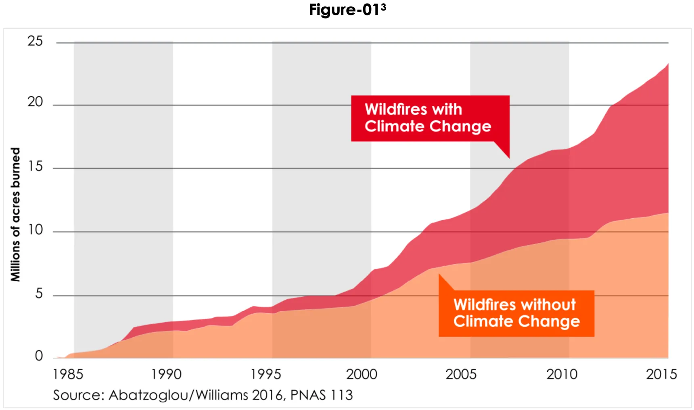
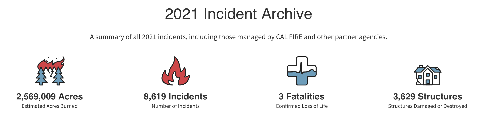

Firefighters Need Your Support!
How Contributions May Be Used
- Funeral Funds For Deceased Firefighters
- Emotional Support For Firefighters And Their Families
- Firefighters Property Loss
- Fire Station Maintenance
Fires Ravage California Every Year
Climate change has increased the severity and duration of wildfires. Increase in dryer and hotter days and decrease in precipitation contribute to these wildfires.
https://www.vox.com/energy-and-environment/2019/10/16/20910947/climate-change-wildfires-california-2019-blackouts
"The number of dry, warm, and windy autumn days—perfect wildfire weather—in California has more than doubled since the 1980s."
-Scientific American
Fires Destroy Lives and Properties
https://www.fire.ca.gov/incidents/2021/
41,074 California Wildfires Between January 2019 and October 2019
https://www.cars2charities.org/blog/donating-to-first-responders
Problems that occur
- Injury and death
- Risk of eye and respitory illnesses
- Property loss
- Utility shutoff